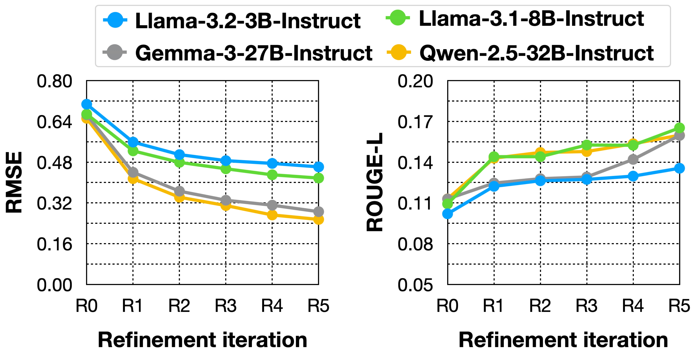
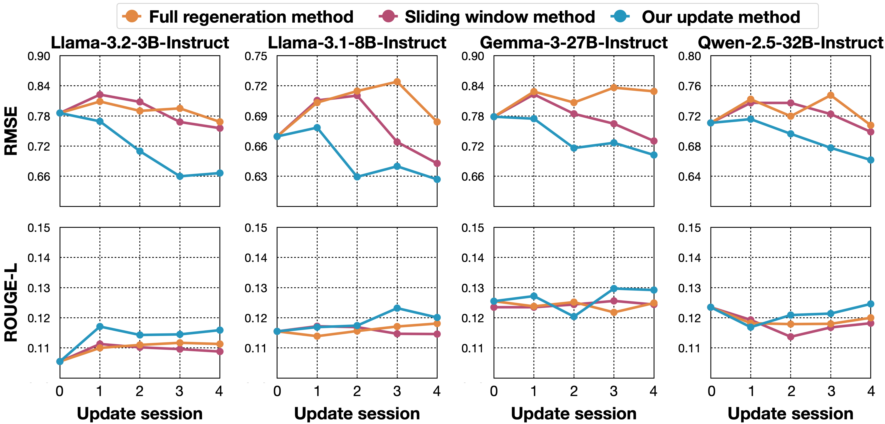

Main Performance Comparison
TRIPLE consistently achieves the highest or second-highest performance across all evaluation models and tasks, even without the refinement cycle. The results underscore our hypothesis that modeling core latent variables yields more accurate behavioral predictions than capturing surface-level preferences.

Role of Profile Refinement
The iterative refinement process progressively enhances the model's ability to capture users' core latent variables. As shown below, performance consistently improves with more refinement iterations (R0 to R5), validating that the errors identified during evaluation successfully guide adjustments to the TPB representations.
Role of Profile Update
Our dynamic update method (blue line) achieves the highest performance and shows progressive improvements over time. In contrast, fully regenerating the profile from scratch (orange line) or using a simple sliding window (purple line) fails to effectively capture the evolving nature of users' long-term latent variables.
